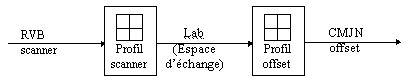
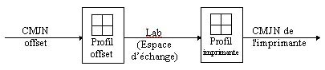

| QU’EST CE QU’UN PROFILE
ICC ? |
Par Laurent Graignic |
C’est un fichier qui pèse de 32Ko à
plus de 1Mo. Le format de ce fichier est défini par l’International
Color Consortium (ICC), organisme mandaté par Apple, Microsoft,
Grétag, Sun Microsystème, Scitex et d’autres encore.
Il en existe de trois sortes : Les profiles écran,
les profiles scanner et les profiles d’impression. Chacun possédant
sa propre structure.
Un profile contient notamment des tables 3D (Sorte de
bibliothèque colorimétrique) à même de caractériser
très finement un périphérique informatique. A ce titre,
il est amusant de noter que tout le monde considère une presse offset
ou un Cromalin comme un périphérique informatique.
Typiquement, les profiles servent à passer
d’un espace colorimétrique à un autre. Par Exemple :
Lab <-------> RVB
Lab <-------> CMJN
Lab <-------> CMJ
Lab <-------> CMJNOV
Le «Lab » est un espace couleur normalisé
par la CIE (Commission Internationale de l’éclairage) et représente
avec trois coordonnées (L, a et b) la couleur perçue par
«l’observateur standard » tel que l’a définie expérimentalement
la CIE sur un échantillon représentatif de la population
humaine. Une valeur Lab exprime donc une perception colorée.
On s’aperçoit donc, dans l’exemple ci dessous,
que pour transformer du RVB d’acquisition scanner en CMJN offset, on doit
utiliser bout à bout les deux profiles correspondant et que le «langage
commun » présent à la jonction est le Lab. D’où
la notion d’espace d’échange.

Certaines technologies autre que ICC utilisent des espaces
d’échanges différents de type RVB. L’avantage du Lab est
sa propriété unique à quantifier les écarts
de couleurs comme la distance séparant les points représentés
par les couleurs. Cette propriété est nécessaire pour
effectuer de façon judicieuse les compressions de couleur et de
contraste indispensable lorsqu’il s'agit «imprimer » un ekta.
CAS DE L’EPREUVE NUMERIQUE
Une épreuve est une simulation de l’offset sur
une imprimante de technologie différente. Le fichier CMJN à
imprimer exprime la couleur en termes de mélange d’encre déposé
sur papier par un procédé offset.
Une simulation consiste donc à transformer les
données originales de mélange d’encre en couleur perçues
(Lab), puis de transformer la couleur ainsi connue en un nouveau mélange
d’encre dépendant cette fois des caractéristiques de l’imprimante.
La transformation par profile s’établit comme suit :

Les profiles ne constituent pas à eux seuls des
outils autonomes. Ils doivent être utilisés par un «CMS
» (Color Managment System) souvent présent dans le Système
d’exploitation.
A titre d’exemple, le CMS d’Apple s’appelle Colorsync,
et celui de Microsoft, ICM.
Il est à noter que les dernières versions
de Photoshop, d’Xpress et d’Illustrator intègrent les fonctionnalités
offertes par le CMS de Mac OS et de Windows 98.
Le Rip BEST exploite un CMS différent et très
performant s’appelant Logosync (Qui tourne aussi d’ailleurs sur Mac
et sur PC).
D’autres systèmes sont dits »compatible ICC
» lorsqu’ils sont capables d’utiliser les informations contenues
dans un profile ICC pour générer des paramètres de
réglage ou des profiles propriétaires. C’est le cas du Fierry.
L’utilisation des profiles ICC avec les CMS cités
plus haut offre des simulations de très bonne qualité. Technologiquement,
la qualité d’une simulation n’est limitée que par la qualités
des profiles. Avec la réserve évidente que l’espace des couleurs
de l’imprimante soit étendue et puisse contenir sans le comprimer
l’espace des couleurs à simuler. C’est le cas des Epson 5000 et
9000.
|